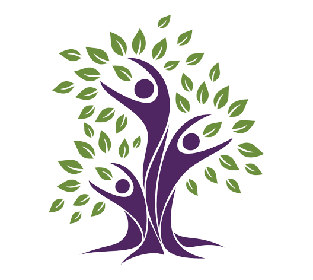

Green Initiative

Embrace the Green Revolution in Kashi!
In our quest for a cleaner and greener Kashi, we are committed to take meaningful steps to protect our
environment and contribute positively to the society. Our Green initiatives embodies our dedication to
sustainability, and we are excited to share our Green Journey with you.
As part of this initiative, we will donate a plant for every participant. We believe that small changes
can make a big difference, and by planting, we are taking a giant leap towards a cleaner, greener and
more sustainable future.
To support this endeavor, we are distributing eco-friendly jute bags. These sturdy and reusable bags are
not only practical but also a stylish way to contribute to the reduction of plastic waste.
We've also introduced organic cotton T-shirts, which are comfortable and trendy garments that are not
only good for you but also for the planet. Choose fashion that cares for the environment!
The sacred Tulsi plant holds a special place in our hearts, and as part of our green initiative, we are
distributing Tulsi saplings to encourage more households to nurture this plant. It not only has a
religious significance but also has numerous health benefits.
Our green initiatives extend beyond the environment. We are actively involved in social initiatives
aimed at uplifting our community. By joining hands with local organizations, we aim to make a positive
impact on the lives of those in need through:
- Single Use Plastic Reduction
- Jute and Paper Bag Usage Promotion
- Digital Registration Advocacy
- Organic T-shirt Promotion
- Plant Donation for Each Registration
- Waste Management Initiatives
After the completion of our event, our commitment to sustainability does not end here. We have
implemented a comprehensive waste management plan to ensure that all the waste generated is properly
sorted and disposed of, minimizing our environmental footprint. Your active participation in this effort
by using the designated bins for recyclables and organic waste is greatly appreciated. Together, let's
continue our journey towards a cleaner and greener Kashi, long after the event's conclusion.
As we embark on this journey towards a cleaner and greener Kashi, we invite you to be a part of our
Mission. Together, we can create a more sustainable future for our beloved city. "Clean Kashi, Green
Kashi" is not just a slogan; it's a way of life. Let's embrace it wholeheartedly and leave a lasting
legacy of environmental stewardship and social responsibility.